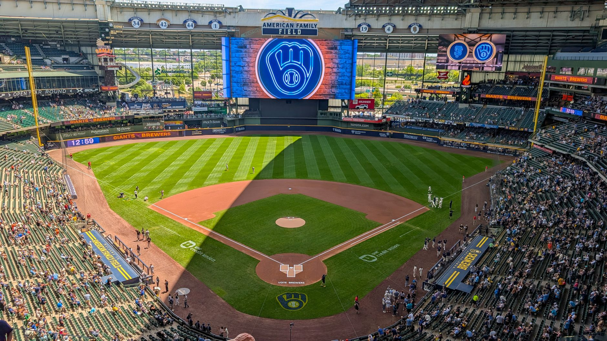

A night of high stakes and electric energy
The 2026 World Series kicked off with a spectacle that lived up to every ounce of pre-game hype. From the moment the first pitch was thrown, it was clear that the Milwaukee crowd was ready to turn their stadium into a fortress. The energy in the stands was palpable, with fans creating a wall of sound that seemed to influence every pitch and swing on the diamond.
For the Brewers, this wasn't just another game; it was the culmination of a grueling season and a testament to their resilience. The early innings saw a tactical chess match between the starting pitchers, with both sides trading scoreless frames and showcasing elite defensive positioning. Every movement on the field was scrutinized by a national audience eager to see which team would set the tone for the series.
Dominance in the early and middle innings
The Brewers established their dominance early through disciplined hitting and aggressive base running. They managed to manufacture runs through a combination of timely contact and capitalizing on opponent errors. Their ability to stay focused during the middle innings allowed them to build a lead that many thought would be insurmountable.
Key tactical elements that helped the Brewers maintain control included:
The ninth inning storm arrives
Just as the celebration seemed imminent, the momentum shifted violently in the bottom of the ninth. The opposing lineup found their rhythm, connecting on several hard-hit balls that sent the visiting fans into a frenzy. The tension in the stadium reached a breaking point as runners began to populate the bases, threatening to erase the Brewers' hard-earned lead.
The pressure in that ninth inning was unlike anything I have ever experienced in professional baseball; you could feel the air leave the stadium with every hit.
The bullpen was immediately called upon to weather the storm. It was a moment of truth for the Milwaukee relief corps, testing their ability to execute under the most intense scrutiny imaginable. The crowd was split between deafening cheers for the comeback and anxious prayers for a defensive stop.
Clutch pitching secures the victory
In what can only be described as a masterclass in composure, the Brewers' closer stepped onto the mound to face the heart of the opponent's order. Despite the chaos of the previous half-inning, the pitcher remained unfazed, leaning on a devastating slider and a high-velocity fastball to keep hitters off balance.
The final out was a beautiful sequence of defensive coordination. A sharp ground ball was fielded cleanly, tossed to second for the force out, and then thrown to first to seal the deal. The stadium erupted as the Brewers players converged on the mound, celebrating a victory that felt both earned and narrowly escaped.
Looking ahead to Game 2 and beyond
Taking Game 1 provides the Brewers with a significant psychological advantage as the series moves forward. However, the ninth-inning scare serves as a reminder that no lead is safe in the World Series. The visiting team will undoubtedly look to adjust their approach to the Brewers' bullpen in the upcoming games.
As we analyze the dynamics of this series, one must consider how athleticism and quickness will play a role in the coming days. For more insights on the tactical side of this matchup, check out our deep dive on World Series 2026: Will Speed Define the Title Race? at https://dhyey.bond/blog/world-series-2026-will-speed-define-the-title-race/ to see how tempo might shift the momentum again.
See Also
If you enjoyed this Baseball News article, check out World Series 2026: Will Speed Define the Title Race? for more useful reading.